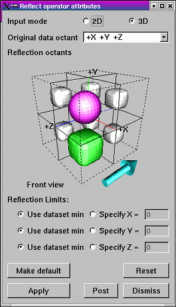
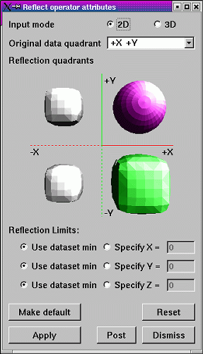

The Reflect operator assumes that the database being reflected resides in the +X+Y+Z octant when performing its reflections. Sometimes, due to the orientation of the database geometry, it is convenient to assume the geometry exists in another octant. To change the data octant, make a new selection from the Original data is in octant menu in the Reflect operator attributes window. The Reflection operator attributes window graphically depicts the original data octant as the octant that contains a sphere instead of a cube, which correspond only to reflections.
|  |
| Figure 45 |
|  |
| Figure 46 |